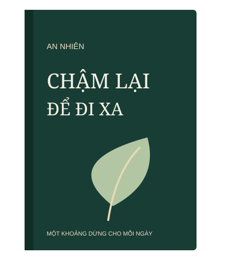

01
Hiểu nhịp sống
Nhìn lại những điều đang chiếm thời gian và năng lượng của bạn.
MỘT CUỐN SÁCH CHO NHỮNG NGÀY BẬN RỘN
Tìm lại nhịp sống của riêng bạn qua những câu chuyện nhỏ, bài thực hành ngắn và những câu hỏi đáng suy ngẫm.
Đọc chương đầuKhám phá sáchẤn phẩm và nội dung minh họa cho dự án Frontend.

AUTHOR / TÁC GIẢ
An Nhiên là nhân vật tác giả được xây dựng cho ấn phẩm minh họa này. Những trang viết xoay quanh thói quen sống, sự tập trung và cách dành thời gian cho điều có ý nghĩa.
Mỗi chương kết hợp một câu chuyện, một câu hỏi và một bài thực hành để người đọc có thể áp dụng ngay.
FEATURES / BÊN TRONG CUỐN SÁCH
Nhìn lại những điều đang chiếm thời gian và năng lượng của bạn.
Đặt ưu tiên rõ ràng và tạo khoảng trống cho những mục tiêu dài hạn.
Những bài tập ngắn giúp bạn biến suy nghĩ thành hành động.
PRICES / CHỌN PHIÊN BẢN
79.000₫
PHIÊN BẢN GIẤY
159.000₫
Giá minh họa. Trang không nhận đơn hàng hay thanh toán.
DOWNLOAD / ĐỌC THỬ
Tải đoạn đọc thử và khám phá ý tưởng đầu tiên: tạo một khoảng dừng trước khi bắt đầu ngày mới.
Tải chương đọc thửTệp văn bản UTF-8 • Không cần đăng ký
READER’S SAY / GÓC ĐỘC GIẢ
Một khoảng nghỉ cần thiết.
Những câu hỏi cuối chương khiến tôi muốn ngồi lại và viết ra điều mình đang nghĩ.
Nhỏ, nhưng có thể bắt đầu.
Tôi thích cách mỗi ý tưởng được kết thúc bằng một hành động đơn giản.
Dễ đọc, dễ suy ngẫm.
Nội dung gần gũi và có chỗ cho người đọc tự tìm câu trả lời.